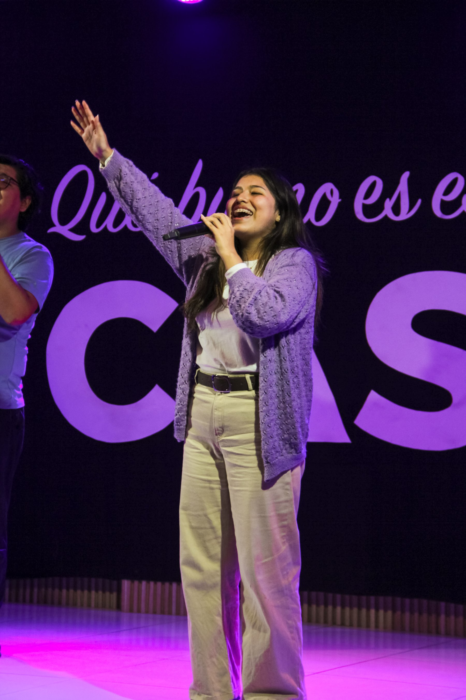

Servir es una de las formas más directas de amar a los demás. Hay un lugar para ti según tus tiempos y tus dones.
Toca un área para conocer de qué trata y, si quieres, inscribirte.
Completa tus datos y el área que te interesa. Alguien de ese equipo se pondrá en contacto contigo.
El equipo de Visuales cuida todo lo que la congregación ve en pantalla durante el servicio: letras de alabanza, versículos, anuncios y video. Su trabajo ayuda a que nadie se distraiga buscando dónde está el texto o el siguiente anuncio.
Anunciad entre las naciones su gloria, en todos los pueblos sus maravillas.
SALMOS 96:3 · RVR1960Como equipo de programación, nos encargamos de cuidar y facilitar el desarrollo de los servicios y eventos de nuestra iglesia. Nuestra labor consiste en organizar el orden, los tiempos y las transiciones de cada programa, guiando de manera discreta tanto el desarrollo del evento como a las personas que participarán en la plataforma.
Creemos que cada culto y evento en la iglesia tiene el potencial de ser un espacio para el poder y obra del Espíritu Santo en los asistentes; por ello, nuestro propósito no es simplemente cumplir un horario, sino crear un ambiente donde todo fluya con orden y excelencia para que la congregación pueda concentrarse plenamente en adorar a Dios y recibir Su Palabra, sin distracciones causadas por desorganización o improvisación.
Muchas veces nuestro trabajo pasa desapercibido, y esa es precisamente la meta. Cuando el programa fluye con naturalidad, las personas no notan quién coordinó cada detalle; simplemente pueden enfocarse en Jesús.
Pues Dios no es Dios de desorden sino de paz, como en todas las reuniones del pueblo santo de Dios… asegúrense de que todo se haga de forma apropiada y con orden.
1 CORINTIOS 14:33,40 · NTV"La programación no busca controlar un servicio; busca servir al mover de Dios con orden."
Nosotros no somos quienes dirigimos espiritualmente la reunión; preparamos la estructura para que el liderazgo y nuestros hermanos puedan ministrar con libertad.
El equipo de Alabanza guía a la congregación a adorar con la voz o con un instrumento. No se trata de una presentación, sino de abrir un espacio para que la iglesia se encuentre con Dios a través de la música.
Servid a Jehová con alegría; venid ante su presencia con regocijo.
SALMOS 100:2 · RVR1960El equipo de Niños cuida, enseña y ama a los más pequeños de nuestra casa mientras sus padres participan del servicio. Es un espacio seguro donde los niños también pueden conocer a Jesús, a su nivel.
Dejad a los niños venir a mí, y no se lo impidáis; porque de los tales es el reino de los cielos.
MATEO 19:14 · RVR1960El equipo de Fotografía captura los momentos de la iglesia — cultos, grupos pequeños y eventos — para que queden como testimonio y se puedan compartir con quienes no estuvieron ahí.
Generación a generación celebrará tus obras, y anunciará tus poderosos hechos.
SALMOS 145:4 · RVR1960El equipo de Equipos cuida toda la parte técnica que hace posible cada servicio: cámaras, monitores, cables, trípodes y el sonido. Trabajan antes de que la congregación llegue y siguen ahí hasta que se apaga la última luz, para que todo funcione sin interrupciones.
Y todo lo que hagáis, hacedlo de corazón, como para el Señor y no para los hombres.
COLOSENSES 3:23 · RVR1960